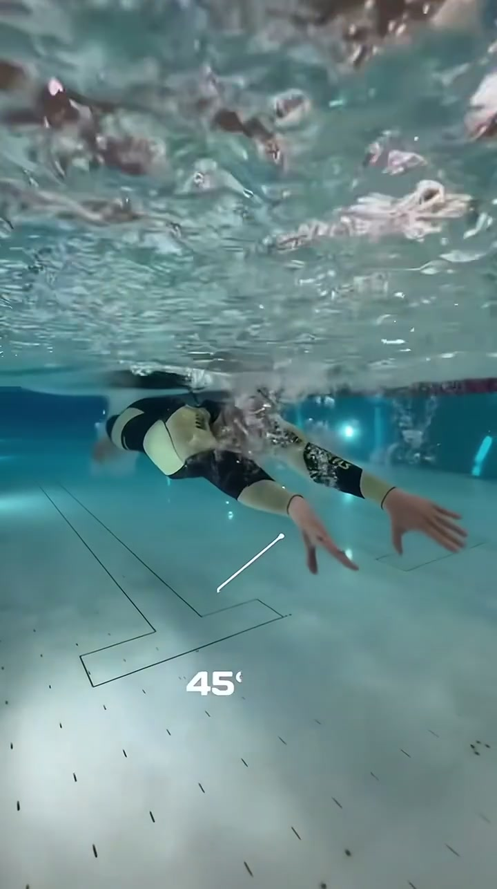
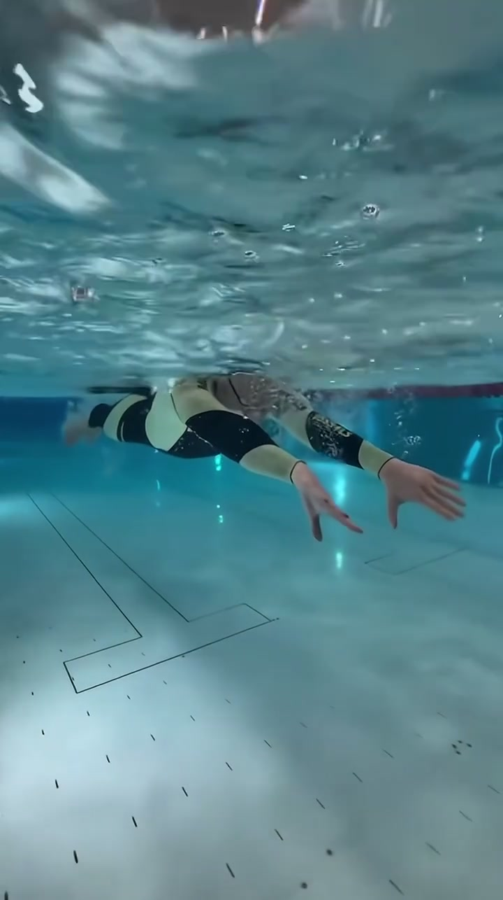
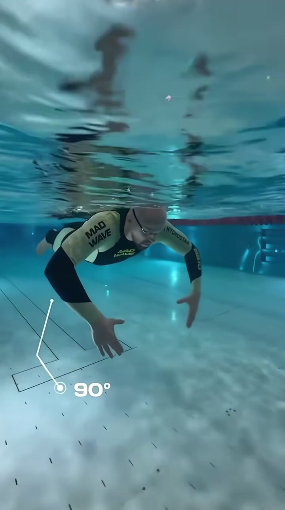
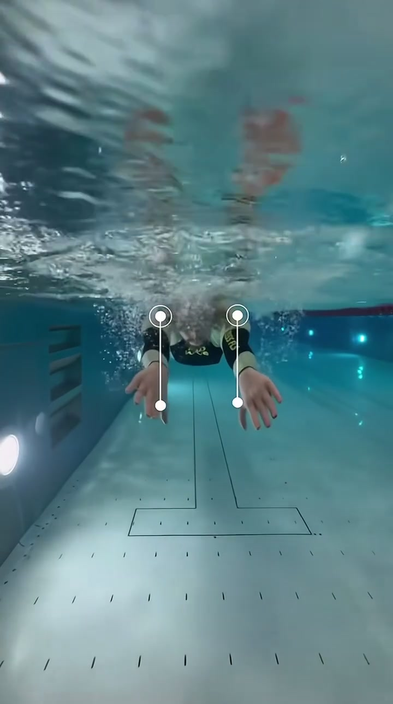
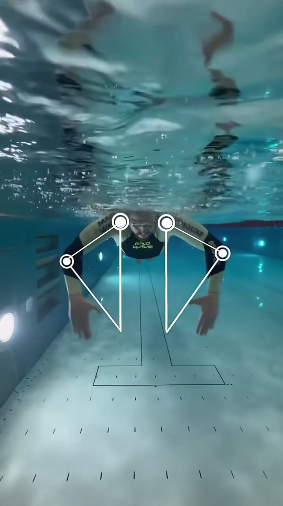
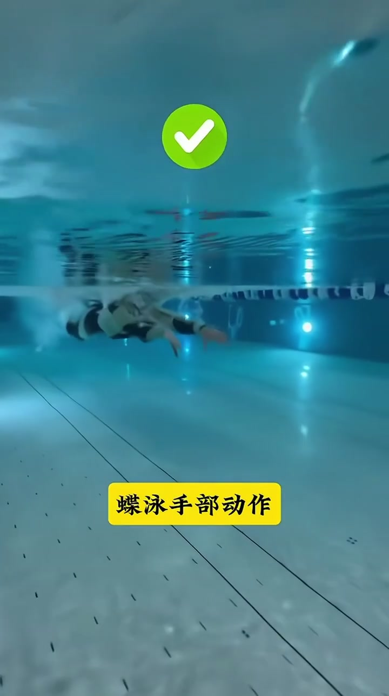
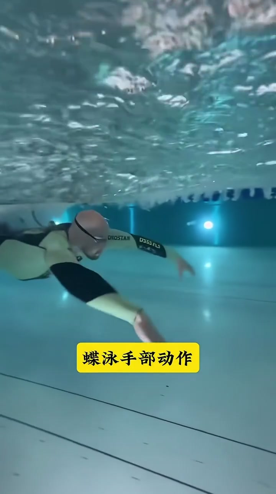

开场 · 00:00
从水下抬头看入水角度
镜头沉在泳池里、略微仰拍：泳者穿黑黄长袖竞赛服，俯卧近水面，双臂前伸准备进入蝶泳手部动作。右手附近叠着一条白色斜线，并标出醒目的「45°」——视频一开场就把「入水/前伸相对水面的角度」钉成可测量的画面证据。
本片配乐较强、口播几乎不可辨。Whisper 原始识别曾出现字幕署名幻觉，页末转录按「[听不清]」保留原始分段时间轴。正文依据水下画面、角度叠字与黄底标题展开，不补写未说出的口播。

前伸滑行 · 00:02
双手叠合，先把身体拉直
约两秒处，同一机位下泳者进入更清晰的流线型前伸：双臂并拢前伸、双手交叠，头夹在两臂之间，贴近水面滑行。池底黑色「T」字线与虚线标记清晰可见——这一段没有新的角度数字，却把「抱水之前先伸直、先占好水面下的前伸空间」交代清楚。

高肘抱水 · 00:04
肘角被标成 90°
画面推进到抱水瞬间：双臂在身前形成弯肘抓水，右肘附近出现两条白线夹出一个夹角，旁边写着「90°」。泳镜、泳帽与袖上「MAD WAVE / HYDROSTAR」字样清晰可辨。这一帧把「高肘抱水」从口头概念落成可对表的肘关节角度。

前视切换 · 00:08
换到迎面机位，开始跟手
镜头切到正对泳者的水下前视：泳者迎面游来，双臂前伸略外展，掌心朝下，面部附近水面翻白浪。画面左右各叠一条带圆点的白色竖线，像在追踪双手/前臂的对称位置——多视角承诺开始兑现：不只侧看肘角，还要正看双手是否同步。

关节参考 · 00:10
肩与肘被点亮，再拉下垂线
前视继续：胸前「MAD WAVE」字样清楚，肩、肘四处各落一个白色圆点，再用白线连成肩—肘线段，并从各点向下拉出竖直参考线。几何叠加把「手臂相对身体中线/竖直方向的张开与下压」画成三角形关系——读者不必懂软件，也能看出视频在量什么。

正确示范 · 00:14
绿勾落下，标题写成「蝶泳手部动作」
机位回到偏侧的水下全景：泳者双臂前伸入水，顶部出现绿色圆底白勾，底部黄底黑字写着「蝶泳手部动作」。这是全片最明确的价值判断——此前角度与参考线都在为这一段「正确手部路径」铺垫。

划水推进 · 00:18
同一标题下，把抱水划完
标题仍挂在画面下方，泳者继续完成手部动作：双臂由前伸转为向两侧外展并向下后方划水，水面被搅起大量气泡。视频没有再追加新口令，而是用连续侧视把「入水 → 抱水 → 外划推进」连成一条可见轨迹，呼应笔记里「更好理解整个蝶泳划水过程」。

22 秒看完留下什么
这不是陆上口令课，而是水下角度课：45° 标出入水/前伸关系，90° 标出抱水肘，前视关节线检查对称与空间，最后用绿勾把整段手部路径命名为「蝶泳手部动作」。口播听不清时，仍可按叠字与机位切换复盘。